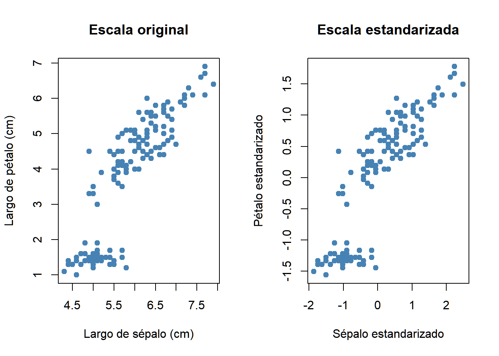
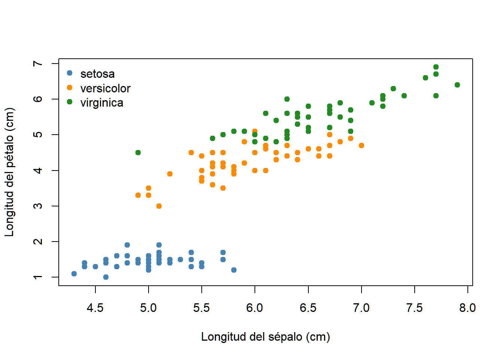

sin una respuesta que dirija el ajuste. Las filas son observaciones y las columnas son características. La pregunta no es necesariamente «¿qué etiqueta predigo?», sino «¿qué estructura existe en los datos?». Dos familias centrales de esta unidad son:
Reducción de dimensión: construir una representación de pocas coordenadas para resumir o visualizar la variación.
Agrupamiento: identificar conjuntos de observaciones similares bajo una noción explícita de similitud.
AdvertenciaUna distinción importante
Que un algoritmo produzca grupos no demuestra que existan categorías naturales. Además, un gráfico de dos dimensiones puede ocultar estructura presente en el espacio original.
Ejemplo. Si tenemos perfiles de expresión de miles de genes para varias muestras, podemos buscar patrones sin proporcionar al algoritmo las etiquetas de tejido. Si después contamos con esos metadatos, podemos utilizarlos para interpretar la estructura encontrada, pero no formaron parte del ajuste.
Advertencia🧠 Preguntas para discutir
¿Qué diferencia hay entre agrupar muestras por expresión génica y predecir el tipo de tejido?
¿Qué podría significar «similitud» entre dos perfiles biológicos?
¿Es posible obtener dos agrupamientos diferentes, ambos razonables, para los mismos datos?
17.2 Primer conjunto de datos: Iris
Usaremos el conjunto Iris, con cuatro medidas de flores. La especie se conservará únicamente como metadato para interpretar, no como entrada de los algoritmos no supervisados.
Sepal.Length Sepal.Width Petal.Length Petal.Width
Min. :4.300 Min. :2.000 Min. :1.000 Min. :0.100
1st Qu.:5.100 1st Qu.:2.800 1st Qu.:1.600 1st Qu.:0.300
Median :5.800 Median :3.000 Median :4.350 Median :1.300
Mean :5.843 Mean :3.057 Mean :3.758 Mean :1.199
3rd Qu.:6.400 3rd Qu.:3.300 3rd Qu.:5.100 3rd Qu.:1.800
Max. :7.900 Max. :4.400 Max. :6.900 Max. :2.500
Observa: los nombres de las variables difieren ligeramente entre R y Python, pero representan las mismas cuatro medidas. No combinaremos los dos motores en un mismo objeto: cada pestaña es una ruta autónoma.
17.3 La distancia depende de la pregunta
Para dos observaciones \(\mathbf{x},\mathbf{y}\in\mathbb{R}^p\), dos opciones habituales son:
Una distancia pequeña solo significa que dos observaciones son próximas con las variables, unidades, transformación y distancia elegidas. No es una afirmación absoluta de similitud.
17.4 ¿Por qué importa la escala?
Consideremos tres observaciones descritas mediante longitud y masa:
Observación
Longitud (m)
Masa (g)
A
1
100
B
2
110
C
4
101
Sin cambiar los datos físicos, convertir gramos a kilogramos puede modificar cuál observación parece más cercana a A si utilizamos directamente la distancia euclidiana. Compruébalo:
El centrado no cambia las distancias euclidianas entre observaciones; el escalamiento sí puede cambiarlas. Estandarizar suele ser útil cuando las unidades no son comparables, pero no es una regla automática: a veces la variabilidad absoluta es parte del fenómeno.
par(mfrow =c(1, 2))plot(X_r[, 1], X_r[, 3], pch =19, col ="steelblue",xlab ="Largo de sépalo (cm)", ylab ="Largo de pétalo (cm)",main ="Escala original")plot(X_est_r[, 1], X_est_r[, 3], pch =19, col ="steelblue",xlab ="Sépalo estandarizado", ylab ="Pétalo estandarizado",main ="Escala estandarizada")

Código
par(mfrow =c(1, 1))
NotaDetalle técnico: una pequeña diferencia entre lenguajes
scale() en R utiliza la desviación estándar muestral (\(n-1\)) y StandardScaler() en Python utiliza la desviación estándar poblacional (\(n\)). Por ello, los valores estandarizados no son exactamente iguales. La diferencia es pequeña para muestras grandes, pero es importante cuando se comparan resultados numéricos. Si necesitas resultados idénticos, debes utilizar la misma convención en ambos lenguajes.
17.5 Inspección antes de aplicar un algoritmo
Un procedimiento no supervisado puede verse afectado por valores faltantes, variables constantes, duplicados, valores atípicos y variables redundantes. Antes de usar PCA o clustering, conviene documentar qué se hizo con ellos.
En datos composicionales, de conteos o con numerosos ceros, estandarizar columnas no siempre resuelve el problema geométrico. La transformación y la disimilitud deben responder al tipo de dato y a la pregunta científica.
17.6 Exploración visual: ¿hay grupos?
Un diagrama de dispersión permite reconocer patrones en un par de variables, pero no representa necesariamente toda la estructura de las cuatro dimensiones. En el siguiente gráfico, el color por especie se añade únicamente para interpretar los datos: el algoritmo no ha aprendido esas etiquetas.
for nombre in iris.target_names: idx = especie_py == nombre ax.scatter(X_py.loc[idx, X_py.columns[0]], X_py.loc[idx, X_py.columns[2]], label=nombre, alpha=.75)
NameError: name 'iris' is not defined
Código
ax.set(xlabel="Longitud del sépalo (cm)", ylabel="Longitud del pétalo (cm)")
NameError: name 'ax' is not defined
Código
ax.legend(title="Metadato: especie")
NameError: name 'ax' is not defined
Código
plt.show()
NameError: name 'plt' is not defined
Código
colores <-c("steelblue", "darkorange", "forestgreen")plot(X_r[, 1], X_r[, 3], pch =19, col = colores[as.integer(especie_r)],xlab ="Longitud del sépalo (cm)", ylab ="Longitud del pétalo (cm)")legend("topleft", legend =levels(especie_r), col = colores, pch =19, bty ="n")

Para discutir: ¿la separación observada es igualmente clara para todos los pares de variables? ¿Cómo podríamos visualizar simultáneamente información de cuatro, cien o miles de variables? Esta pregunta motiva el estudio de PCA en la siguiente sesión.
17.7 Ejercicios
17.7.1 Ejercicio 1: Supervisado o no supervisado
Justifica si se trata de método supervisado o no supervisado y/o si es un problema de clasificación/regresión/agrupamiento, etc:
predecir resistencia a un antibiótico a partir de genes;
agrupar aislamientos por perfiles genéticos sin usar fenotipos;
representar muestras con dos coordenadas;
predecir una concentración a partir de variables ambientales.
17.7.2 Ejercicio 2. Distancias a mano
Dados \(A=(1,1)\), \(B=(4,5)\) y \(C=(5,1)\), calcula \(d_2(A,B)\), \(d_2(A,C)\), \(d_1(A,B)\) y \(d_1(A,C)\).
¿Cuál es el vecino más cercano a \(A\) con cada distancia?
17.7.3 Ejercicio 3. Unidades y estandarización
Reproduce el ejemplo de longitud y masa.
Identifica el vecino más próximo a A antes y después de convertir gramos a kilogramos.
Estandariza las dos columnas y calcula las distancias.
Explica por qué centrar, por sí solo, no cambia la distancia euclidiana.
17.7.4 Ejercicio 4. Explora Iris
Construye un gráfico usando las variables 2 y 4, sin colores por especie.
Repite con colores.
Calcula las correlaciones y elige un par de variables fuertemente correlacionadas.
Explica por qué las etiquetas de especie no deben incluirse como una quinta columna numérica para PCA o clustering no supervisado.
17.7.5 Reto adicional. ¿Es el mismo conjunto de datos?
Compara las distancias euclidianas entre las primeras cinco flores estandarizadas en R y Python. Explica por qué pueden diferir ligeramente y modifica uno de los procedimientos para que coincidan.